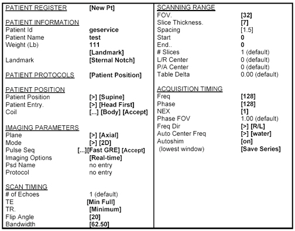

Operating Documentation
Direction 5133330-3, Rev# 14
Signa EXCITE HD 3.0T Service Methods
Module Version 1.0, Version Date 5/15/07
Operating Documentation |
If the bore temperature sensor is disabled, sites with iDrive software will have problems. Sites running the iDrive software must have a functional bore temperature sense circuit. The symptom for a non-functional Bore sensor will be evident when an iDrive scan is attempted; the prescan will complete OK, but the scan will stop immediately after the first pulse is heard in the body coil. No images will be produced and no errors will appear in the log.
If the system has iDrive software (as listed in Option Key tab of Guided Install), to verify functional bore temperature circuit, set up the scan in Illustration 1 (or any other Real Time scan). Download the scan and select [Scan]. If prescan completes and the scan continues to run, you have a functional bore temperature circuit. If prescan completes OK, but the scan stops immediately after the first pulse, check the bore temperature circuit.
Illustration 1: IDrive Sample Protocol

When Signa is first powered on there is a considerable period of time that nothing is seen on the monitor; up to 4 minutes depending on the computer type. The system is checking configurations and starting software processes at this time. If you are concerned that the system is hung, push the <Esc> button on the top left side of the keyboard. The system will then post to the monitor its entire boot up activities.